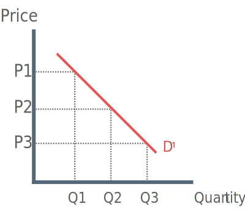

What is price discrimination?
Price discrimination is the practice by firms of charging different prices for the same good or service. There are three different types of price discrimination, however, before we begin to analyse those we will cover the basic conditions and methods of price discrminination.
Three Conditions for Price Discrimination
1) Vendors must operate in imperfect competition and must be a price maker.
2) Consumers must have indentifiable characteristics (age, sex, location) making them seperable into different markets. thus preventing arbitrage / transfer / seepage / resale (all mean the same thing).
3) Different elasticity’s of demand. This allows the firm to charge a higher price to consumers with a more price inelastic demand and a lower price to consumers with a more elastic demand.
Methods of price discrimination
Geographical – Different price in different countries / regions
Time – Higher prices at peak times E.g. train companies
Age of Customer – Child / Student / Pensioner e.g. Cinema or theatre
First Degree Price Discrimination
First degree price discrimination occurs when the discriminating firm can charge a separate price to each individual customer.

First-degree price discrimination relies on separation of markets.
Seller reaches individual bargain with buyer.
Supplier can estimate what the consumer would be prepared to pay.
In doing so, the seller is trying to obtain as much of the consumers surplus as possible.
Second Degree Price Discrimination
Second degree price discrimination occurs when the discriminating firm can charge a separate price to different groups of customer.
In second degree price discrimination the MC curve is horizontal until full capacity. This is best explained using an example:
In an cinema the cost of filling an extra seat is zero, until you fill all the seats = full capacity.
The basic assumption is made that firms maximise at MR = MC (Q1 - P1)
However at P1 - Q1 there is still access capacity i.e. in a cinema there are still seats to be filled.
The cinema may as well sell at a lower price (P2) to fill all the seats (Full). This is also the allocatively efficient level where P = MC and consumers gain the most consumer surplus.
Third Degree Price Discrimination
Third degree price discrimination occurs when the discriminating firm can charge a different prices to different groups of consumers for example different countries.
In third degree price discrimination different groups of customers can be indentified by different with elasticties. The more inelastic consumer groups will face a higher price.